My Projects
Here are some of the projects I've worked on:
Project 1: Personal Portfolio
A personal portfolio website designed to showcase my work, skills, and professional background. The goal was to create a clean, modern, and fully responsive site with seamless navigation.
Technologies Used: HTML, CSS, JavaScript, Flexbox, Git & GitHub
View ProjectProject 2: Local Business Café Website
A fully responsive website for a local café, designed to reflect the café's brand identity while providing key business information like the menu, location, and contact details.
Technologies Used: HTML, CSS, JavaScript, CSS Animations, Git & GitHub
View ProjectProject 3: Online Quiz Application

A JavaScript-powered online quiz application that tests users on various topics. This project focuses on real-time interactivity, dynamic content updates, and user engagement.
Technologies Used: HTML, CSS, JavaScript, DOM Manipulation, Git & GitHub
View Project